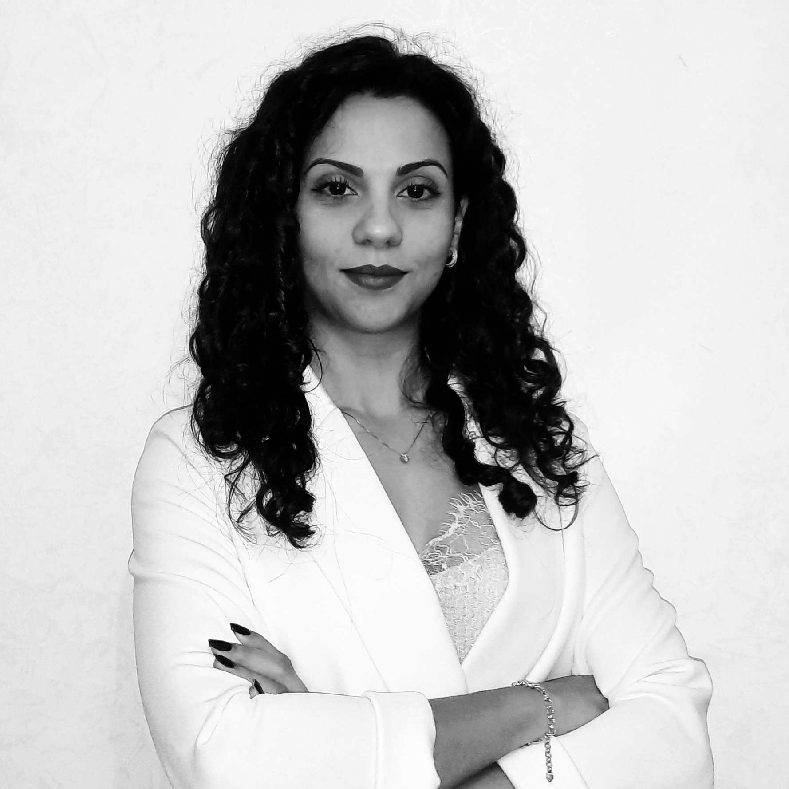
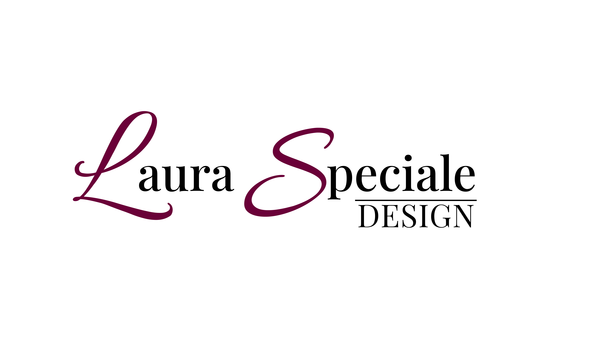

About Me
Sono una designer laureata in Disegno Industriale presso l'Università degli Studi di Palermo e attualmente sto completando la mia specializzazione in Fashion Design System all'Università di Firenze.
La mia formazione dirama in diversi settori:
- Fashion Design
- Web Design
- Architectural Design
- Product Design


Esperienze e Contaminazioni
Il mio background è stato arricchito da esperienze significative che hanno influenzato il mio metodo di lavoro:
Esperienza Internazionale
Un periodo di studi Erasmus in Spagna, fondamentale per sviluppare un approccio al
design aperto, cosmopolita e proiettato verso contesti internazionali.
Formazione sul Campo
Tirocinio presso uno studio di architettura, dove ho messo in atto le mie capacità tecniche
e toccando con mano pratiche, disegni ecc.
Grazie a questo bagaglio eterogeneo, riesco a spaziare con occhio critico e sensibilità estetica tra diversi ambiti,
ricercando sempre un equilibrio armonico tra forma, funzione e strategia.
Contatti
Per contattarmi inviami una E-mail!
Puoi trovarmi anche sui canali social:
-Instagram: Laura Speciale
-Facebook: Laura Speciale
-LinkedIn: Laura Speciale
